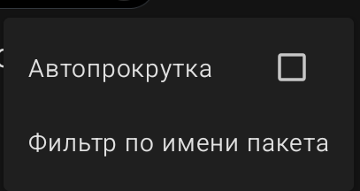

Менеджер чтения Logcat (Отладка)
Logcat — это системный журнал Android, в который записываются все события и ошибки. Этот инструмент незаменим для поиска проблем в вашем приложении.
- Пустой экран: надпись «Logcat пока ничего не записал» означает, что программа еще не запускала ваше приложение или не получала логов. Оставьте этот экран открытым и запустите ваше приложение.
Меню (три точки)

- Автопрокрутка: если включено, список логов будет автоматически прокручиваться вниз по мере появления новых записей.
- Фильтр по имени пакета: позволяет отфильтровать логи так, чтобы отображались только сообщения от вашего приложения, а не от всей системы.
Sketchware Pro 7 · Автор: RasNikGal · © 2026